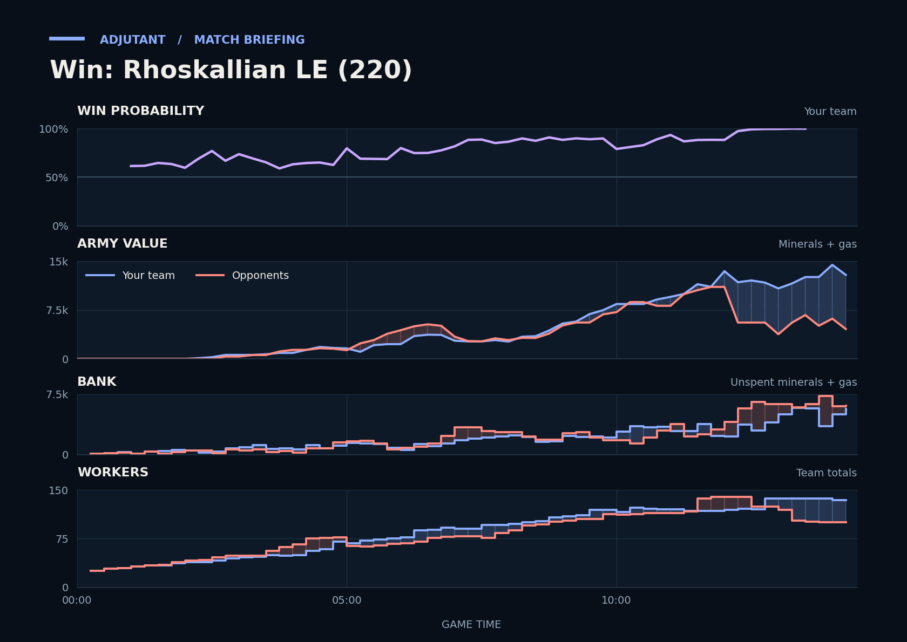

Win: Rhoskallian LE (220)
Provisional debrief. The full report (timeline, insights and analysis) is being generated.

Cached narration uses different analysis inputs (facts, engine notes, prompts or model settings). It has not been regenerated for this report.
**Win.** You won because the 11:40 fight at UnderlineENT's fourth and octomologyst's third was even going in, but the opponents lost far more army.
**Why**
- 6:40–8:24: Going in behind, the duo killed more army than they lost; UnderlineENT's army fell to 50 in that window.
- 11:40–13:20: Armies were even going in, but Thors and Hydralisks cut down Carriers and Phoenixes, leaving the opponents about 4,400 army.
- 13:32–14:25: Going in ahead on army, the duo traded well: the opponents lost twice the army, and UnderlineENT typed gg.
Current engine analysis: Win. Review 6:40–8:24: you won a fight (5,125 killed, 3,925 lost). The biggest fight came at 11:40–13:20 (6,475 lost, 14,075 killed).